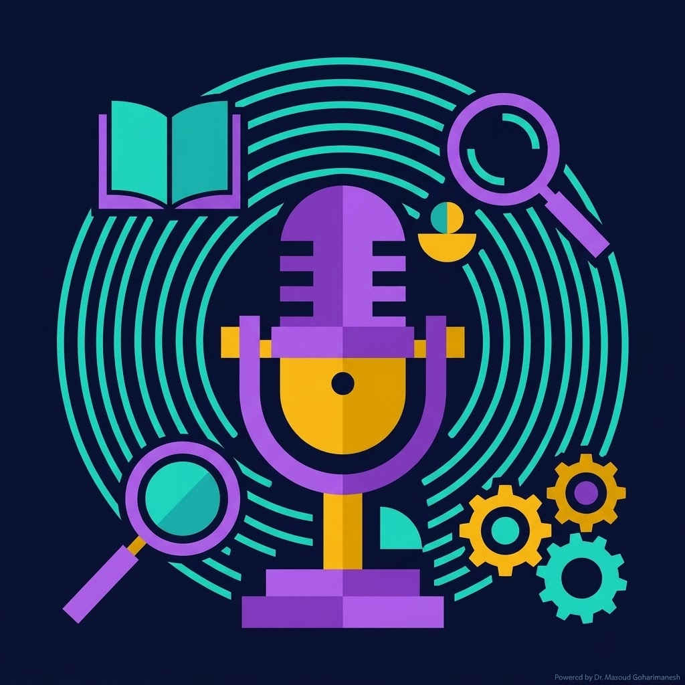

دانشگاه تربت حیدریه | گروه مهندسی مکانیک
این دوره با همکاری دکتر علی کوچی و دکتر مسعود گوهری منش طراحی شده است. هدف، آموزش گامبهگام روش پژوهش از انتخاب موضوع تا انتشار مقاله علمی است.
مشاهده جلساتدرس «روش پژوهش» یک درس ۱ واحدی برای دانشجویان کارشناسی ارشد مهندسی مکانیک است. در این دوره، دانشجویان با مبانی پژوهش، اخلاق علمی، روشهای کیفی و کمی، نگارش علمی، و فرآیند انتشار مقاله آشنا میشوند. رویکرد دوره کاملاً پروژهمحور است و دانشجویان به صورت عملی یک مقاله مروری در حوزه MEMS/NEMS را از ابتدا تا انتها طراحی میکنند.
دکتر علی کوچی
دکتر مسعود گوهری منش
۸ جلسه (۱ واحدی)
نیمسال اول
A.koochi@gmail.com
درآمدی بر پژوهش و اخلاق علمی
انتخاب موضوع و پیشینه پژوهش
روشهای کیفی، کمی و آمیخته
مدلسازی، مطالعه موردی و صحتسنجی
ساختار گزارش و نگارش پایاننامه
اصول تصویرسازی و دادهنمایی
ارائه شفاهی و بصری
انتشار مقاله، کنفرانس و ژورنال
حضور مؤثر در کلاس و انجام تکالیف
طراحی و اجرای یک مقاله مروری در حوزه MEMS/NEMS
آزمون کتبی جامع از مباحث دوره
از بین ۲۰ موضوع زیر، یک موضوع را انتخاب کنید و مسیر گامبهگام را تا نگارش مقاله مروری دنبال کنید.
Nathanson et al., "The Resonant Gate Transistor," IEEE Trans. Electron Devices, 1967
حسگری جرمPetersen, "Silicon as a Mechanical Material," Proc. IEEE, 1982
مواد سیلیکونیHowe & Muller, "Polycrystalline Silicon Micromechanical Beams," 1983
ساخت سطحیLaermer & Schilp (Bosch), 1996
فرآیند ساختHornbeck, "Deformable-Mirror Spatial Light Modulators," 1989
MEMS نوریAnalog Devices ADXL series, 1990s
شتابسنجGreiff et al., "Micromechanical tuning fork gyroscope," 1991
ژیروسکوپManz et al., "Miniaturized Total Chemical Analysis Systems (µTAS)," 1990
زیستحسگرCleland & Roukes, "Fabrication of high frequency nanometer scale mechanical resonators," 1996
NEMS تشدیدیBunch et al., "Electromechanical Resonators from Graphene Sheets," Science, 2007
گرافنJensen, Kim & Zettl, "An atomic-resolution nanomechanical mass sensor," Nature Nano, 2008
حسگری اتمیRoundy et al., "A study of low level vibrations as a power source," 2003
برداشت انرژیMuralt, "PZT thin films for microsensors and actuators," 2000
پیزوالکتریکYao & Chang, "A surface micromachined miniature switch," 1995
RF MEMSStroock et al., "Chaotic mixer for microchannels," Science, 2002
میکروسیالاتWise & Najafi, "Microelectrodes for intracortical recording," 1985
پروب عصبیMilanović et al., "Gimbal-less monolithic silicon actuators," 2004
آینه MEMSRugar et al., "Single spin detection by magnetic resonance force microscopy," Nature, 2004
حسگری نیروMehregany et al., "SiC MEMS: opportunities and challenges," 1999
محیطهای سختRogers et al., "Materials and mechanics for stretchable electronics," Science, 2010
انعطافپذیر"[topic] review" 2024..2026 و جدیدترین Review را دانلود کنید.مقالات IEEE
مقالات Elsevier
تحلیل استنادات
تحلیل استنادات
جستجوی آزاد
جستجوی معنایی
نقشه استنادی
گراف مقالات
پیشچاپها
شبیهسازی نانو
جستجوی معنایی
تحلیل استنادات
مدیریت مراجع
مدیریت مراجع
نگارش LaTeX
در این بخش، پادکستهای هر جلسه قرار میگیرد.

دکتر علی کوچی و دکتر مسعود گوهری منش
تمام کلمات کلیدی حوزه پژوهش را با معادل انگلیسی و تعریف فارسی جستجو کنید.
ایمیل: A.koochi@gmail.com
ایمیل: m.goharimanesh@gmail.com